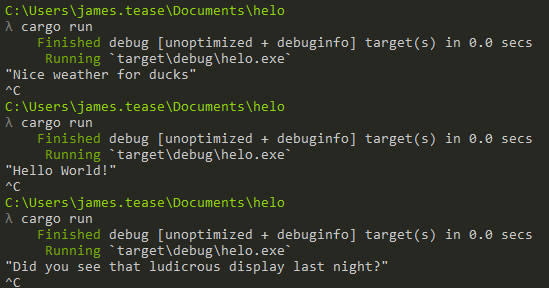
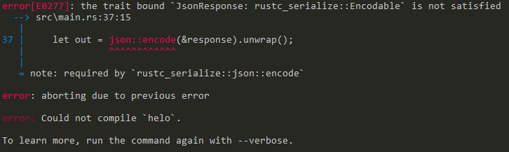

Writing a basic JSON response web server in Rust using Iron.
I wanted to use Rust in web development, so decided to build a small server which responded to Get or Post requests with a JSON string, optionally taking a parameter from the request. I decided to use the Iron framework simply because there seemed to be a fair few articles about it and it looked straightforward enough at first glance.
The full code I'll cover is in a gist here. A modified version of this code is running a Dark Souls name generator - change the name via get or post - the full code of which is on Github.
Create a new Rust project with
cargo new hello --bin
The --bin flag tells Cargo to create a project which will compile to a binary file, rather than a library.
Add Iron to your dependencies in 'Cargo.toml':
[dependencies]
iron = "0.4.0"
Update /src/main.rs with the code from Iron's 'Hello world' example, and run via cargo run. Cargo will install Iron and it's dependencies, so this may take some time, then compile and run the 'hello world' code.
`
extern crate iron;
use iron::prelude::*; use iron::status;
fn main() {
Iron::new(|_: &mut Request| {
Ok(Response::with((status::Ok, "Hello world!")))
}).http("localhost:3009").unwrap();
}
`
Next, we'll change our response from text to JSON. Based on the content type example, add the Mime import, and update the response:
`
extern crate iron;
use iron::prelude::*; use iron::status; use iron::mime::Mime;
fn main() { Iron::new(|: &mut Request| { let contenttype = "application/json".parse::<Mime>().unwrap();
Ok(Response::with((content_type, status::Ok, "{ response: \"Hello world!\" }"))) }).http("localhost:3009").unwrap();
}
`
Let's change the response so it selects a random string. Add the 'rand' crate to the dependencies:
Cargo.toml
[dependencies]
iron = "0.4.0"
rand = "0.3"
then create a function in main.rs which picks a string at random:
`
extern crate rand; // reference the random crate
extern crate iron;
use iron::prelude::*; use iron::status; use iron::mime::Mime; use rand::Rng; // use random number generator
// pick a string at random fn pick_response() -> String {
// generate a number between 1 and 3 (4 is exclusive upper-bound) let num = rand::threadrng().genrange(1, 4);
// match the random number and pick a random string let response = match num { 1 => "Hello World!", 2 => "Did you see that ludicrous display last night?", 3 => "Nice weather for ducks", _ => "" // match is exhaustive };
// return our string response.to_string() }
fn main() { // check it's working - this will appear in your terminal println!("{:?}", pick_response());
Iron::new(|: &mut Request| { let contenttype = "application/json".parse::<Mime>().unwrap();
Ok(Response::with((content_type, status::Ok, "{ response: \"Hello world!\" }")))}).http("localhost:3009").unwrap(); }
`
Run via cargo run - if all goes well, you'll see a string printed in the terminal:

Now we need to transform the random string into JSON so we can send it. There's a choice of crates to use here: rustc-serialize and serde-json. rustc-serialize is an older option which isn't very active, while serde is actively developed and is the de facto standard for Rust serialisation. However, the downside of serde is that you'll need to use the nightly version of Rust, at least until custom traits have been added to the stable branch. Here's a bit of a comparison between the two..
I'm going to use rustc-serialize, since I've used it before, and found using serde a huge pain on Windows.
We need the rustc-serialize crate, so add it to your dependencies:
Cargo.toml
[dependencies]
iron = "0.4.0"
rand = "0.3"
rustc-serialize = "0.3"
aaand update the imports in main.rs:
`main.rs
extern crate rand;
extern crate iron;
extern crate rustc_serialize;
use iron::prelude::*;
use iron::status;
use iron::mime::Mime;
use rand::Rng;
use rustc_serialize::json;
`
We'll create a struct which holds the response string, and use serde to convert it into JSON, which we'll then send as a response.
Create a struct which has one string field, and initialise it in main():
`main.rs
struct JsonResponse {
response: String
}
fn main() { println!("{:?}", pick_response());
Iron::new(|: &mut Request| { let contenttype = "application/json".parse::<Mime>().unwrap();
// create the response
let response = JsonResponse { response: pick_response() };
// convert the response struct to JSON
let out = json::encode(&response).unwrap();
Ok(Response::with((content_type, status::Ok, out)))}).http("localhost:3009").unwrap(); }
`
If you try to run this, you'll get an error complaining that our struct doesn't satisfy the Encodable trait:

so add the appropriate derive to our struct:
`main.rs
struct JsonResponse {
response: String
}
`
and run:

Let's edit the reponse so we can take a parameter from get or post, and display it back. Update pick_response so it takes a name, and returns a formatted string:
`
fn pickresponse(name: String) -> String {
let num = rand::threadrng().gen_range(1, 4);
let response = match num { 1 => format!("Hello {}!", name), 2 => format!("Did you see that ludicrous display last night, {}?", name), 3 => format!("Nice weather for ducks, isn't it {}", name), _ => format!("") // match is exhaustive };
response.to_string()
}
`
We also need to install 'router' so we have a way of defining routes in Iron:
[dependencies]
iron = "0.4.0"
rustc-serialize = "0.3"
rand = "0.3"
router = "0.4.0"
Now update main() to seperate the route handler
`
extern crate router;
use router::Router; use std::io::Read;
fn handler(req: &mut Request) -> IronResult<Response> { let response = JsonResponse { response: pickresponse("Brian".tostring()) }; let out = json::encode(&response).unwrap();
let contenttype = "application/json".parse::<Mime>().unwrap(); Ok(Response::with((contenttype, status::Ok, out))) }
fn main() { let mut router = Router::new(); router.get("/", handler, "index");
Iron::new(router).http("localhost:3009").unwrap();
}
`
This moves the handler for GET requests to the index into its own function, which now also passes a string to pick_response since there are no parameters in the default request. Adding a route for a POST request is very similar:
`
// make sure we can encode and decode from this struct (for post)
struct JsonResponse { response: String }
fn handler(req: &mut Request) -> IronResult<Response> { let response = JsonResponse { response: pickresponse("Brian".tostring()) }; let out = json::encode(&response).unwrap();
let contenttype = "application/json".parse::<Mime>().unwrap(); Ok(Response::with((contenttype, status::Ok, out))) }
fn post_handler(req: &mut Request) -> IronResult<Response> { let mut payload = String::new();
// read the POST body req.body.readtostring(&mut payload).unwrap(); println!("{:?}", payload);
// we're expecting the POST to match the format of our JsonResponse struct // ie { "response": "Brian" } let incoming: JsonResponse = json::decode(&payload).unwrap();
// create a response with our random string, and pass in the string from the POST body let response = JsonResponse { response: pick_response(incoming.response) }; let out = json::encode(&response).unwrap();
let contenttype = "application/json".parse::<Mime>().unwrap(); Ok(Response::with((contenttype, status::Ok, out))) }
fn main() { let mut router = Router::new(); router.get("/", handler, "index"); router.post("/", posthandler, "postname");
Iron::new(router).http("localhost:3009").unwrap();
}
`
Now, when we visit the homepage, we get a random phrase with "Brian":

and with a POST request, we get a response with the name we send:
curl -X POST -d '{ "response":"Bob" }' http://localhost:3009
{"response":"Did you see that ludicrous display last night, Bob?"}
Full programme so far:
`
extern crate rand;
extern crate iron;
extern crate rustc_serialize;
extern crate router;
use iron::prelude::*; use iron::status; use iron::mime::Mime; use rand::Rng; use rustc_serialize::json; use router::Router; use std::io::Read;
struct JsonResponse { response: String }
fn pickresponse(name: String) -> String { let num = rand::threadrng().gen_range(1, 4);
let response = match num { 1 => format!("Hello {}!", name), 2 => format!("Did you see that ludicrous display last night, {}?", name), 3 => format!("Nice weather for ducks, isn't it {}", name), _ => format!("") // match is exhaustive };
response.to_string() }
fn handler(req: &mut Request) -> IronResult<Response> { let response = JsonResponse { response: pickresponse("Brian".tostring()) }; let out = json::encode(&response).unwrap();
let contenttype = "application/json".parse::<Mime>().unwrap(); Ok(Response::with((contenttype, status::Ok, out))) }
fn post_handler(req: &mut Request) -> IronResult<Response> { let mut payload = String::new();
// read the POST body req.body.readtostring(&mut payload).unwrap(); println!("{:?}", payload);
// we're expecting the POST to match the format of our JsonResponse struct // ie { "response": "Brian" } let incoming: JsonResponse = json::decode(&payload).unwrap();
// create a response with our random string, and pass in the string from the POST body let response = JsonResponse { response: pick_response(incoming.response) }; let out = json::encode(&response).unwrap();
let contenttype = "application/json".parse::<Mime>().unwrap(); Ok(Response::with((contenttype, status::Ok, out))) }
fn main() { let mut router = Router::new(); router.get("/", handler, "index"); router.post("/", posthandler, "postname");
Iron::new(router).http("localhost:3009").unwrap();
}
`
Now everything's working, let's tidy up a bit. Using unwrap() is fine for prototyping, but not great for production code since any problems will cause the programme to panic, and show an ugly error message to the user. Sending a POST request without the response valuse set causes this error:
`
// attribute is supposed to be 'response' not 'name'
curl -X POST -d '{ "name":"Bob" }' http://localhost:3009
thread '<unnamed>' panicked at 'called Result::unwrap() on an Err value: MissingFieldError("response")', ../src/libcore\result.rs:788
note: Run with RUST_BACKTRACE=1 for a backtrace.
`
Similarly, if you send the correct values but invalid JSON, you also get an error:
`
// response needs to be in quotes
curl -X POST -d '{ response:"Bob" }' http://localhost:3009
thread '<unnamed>' panicked at 'called Result::unwrap() on an Err value: ParseError(SyntaxError("key must be a string", 1, 3))', ../src/libcore\result.rs:788
`
And sending non-JSON:
`
curl -X POST -d "Bob" http://localhost:3009
thread '<unnamed>' panicked at 'called Result::unwrap() on an Err value: ParseError(SyntaxError("invalid syntax", 1, 1))', ../src/libcore\result.rs:788
`
We'll work through the post_handler function and update the unwrap calls to use match, so we can handle errors. If we encounter an error, we'll send that back via JSON, so the first thing to do is to update the JsonResponse struct to indicate if there is an error, and if so, what the error message was. It'd get a bit boring to type out the default success and error messages, so we'll also add a couple of functions to create JsonResponse structs:
`
struct JsonResponse { response: String, success: bool, error_message: String }
impl JsonResponse { fn success(response: String) -> Self { JsonResponse { response: response, success: true, errormessage: "".tostring() } }
fn error(msg: String) -> Self {
JsonResponse { response: "".tostring(), success: false, errormessage: msg }
}
}
`
(whether or not it's a good idea to send raw error messages to users I'll leave up to you). We'll also need a new struct for incoming requests, since users don't need to send 'success' or 'error_message' fields:
`
struct JsonRequest {
response: String
}
`
and then update all our existing calls to the struct.
`
fn handler(req: &mut Request) -> IronResult<Response> {
// use the success fn
let response = JsonResponse::success(response: pickresponse("Brian".tostring()));
let out = json::encode(&response).unwrap();
let contenttype = "application/json".parse::<Mime>().unwrap(); Ok(Response::with((contenttype, status::Ok, out))) }
fn posthandler(req: &mut Request) -> IronResult<Response> { let mut payload = String::new(); req.body.readto_string(&mut payload).unwrap(); println!("{:?}", payload);
// use the JsonRequest struct, since incoming will just have the name let incoming: JsonRequest = json::decode(&payload).unwrap();
// update to use success fn let response = JsonResponse::success(response: pick_response(incoming.response)); let out = json::encode(&response).unwrap();
let contenttype = "application/json".parse::<Mime>().unwrap();
Ok(Response::with((contenttype, status::Ok, out)))
}
`
In post_handler, we can now use a match to check if the incoming JSON is correct, rather than an unwrap call. If there is an error, then we create a response with the error message and send that; if not, we can respond as usual.
`
fn posthandler(req: &mut Request) -> IronResult<Response> {
let mut payload = String::new();
req.body.readto_string(&mut payload).unwrap();
println!("{:?}", payload);
let out = match json::decode(&payload) { Err(e) => { let response = JsonResponse::error(format!("Error parsing JSON: {:?}", e)); json::encode(&response).unwrap() }, Ok(incoming) => { // Rust needs to know the type of incoming before we can use it in getname, so set to a variable with a type let converted: JsonRequest = incoming; let response = JsonResponse::success(getname(converted.name)); json::encode(&response).unwrap() } };
// print out the JSON as usual
let contenttype = "application/json".parse::<Mime>().unwrap();
Ok(Response::with((contenttype, status::Ok, out)))
}
`
Error response:
`
curl -X POST -d '{ invalid: "Bob" }' http://localhost:3009
{"name":"","success":false,"error_message":"Error parsing JSON: ParseError(SyntaxError(\"key must be a string\", 1, 3))"}
`
Normal response:
`
curl -X POST -d '{ "name":"Bob" }' http://localhost:3009
{"name":"Hello Bob!","success":true,"error_message":""}
`
We've also got an unwrap when reading the request body:
req.body.read_to_string(&mut payload).unwrap();
If something goes wrong here, then it's likely that the post body is completely malformed and we can't use it, so we may as well stop trying to handle this request. If we fail out of this function, the server will still be listening for more requests so won't crash entirely, so we can replace unwrap with expect. expect is very similar to unwrap in that it panics on error, except it allows you to define your own error message so it's clear what happened.
req.body.read_to_string(&mut payload).expect("Failed to read request body");
Similarly, the json::encode lines in the match statement can use expect rather than unwrap - in this case, something's gone wrong when with the JSON encoder, so we're not able to prepare JSON to send back to the user.
The final unwrap in this function is in setting the content type; again, an expect seems appropriate since this should just indicate programmer error.
`
fn posthandler(req: &mut Request) -> IronResult<Response> {
let mut payload = String::new();
req.body.readto_string(&mut payload).expect("Failed to read request body");
// let incoming: JsonResponse = json::decode(&payload).ok().expect("Invalid JSON in POST body"); let out = match json::decode(&payload) { Err(e) => { let response = JsonResponse::error(format!("Error parsing JSON: {:?}", e)); json::encode(&response).ok().expect("Error encoding response") }, Ok(incoming) => { let converted: JsonRequest = incoming; let response = JsonResponse::success(get_name(converted.name)); json::encode(&response).expect("Error encoding response") } };
let contenttype = "application/json".parse::<Mime>().expect("Failed to parse mime type");
Ok(Response::with((contenttype, status::Ok, out)))
}
`
Full programme so far:
`
extern crate rand;
extern crate iron;
extern crate rustc_serialize;
extern crate router;
use iron::prelude::*; use iron::status; use iron::mime::Mime; use rand::Rng; use rustc_serialize::json; use router::Router; use std::io::Read;
struct JsonRequest { name: String }
struct JsonResponse { response: String, success: bool, error_message: String }
impl JsonResponse { fn success(response: String) -> Self { JsonResponse { response: response, success: true, errormessage: "".tostring() } }
fn error(msg: String) -> Self { JsonResponse { response: "".tostring(), success: false, errormessage: msg } } }
fn pickresponse(name: String) -> String { let num = rand::threadrng().gen_range(1, 4);
let response = match num { 1 => format!("Hello {}!", name), 2 => format!("Did you see that ludicrous display last night, {}?", name), 3 => format!("Nice weather for ducks, isn't it {}", name), _ => format!("") // match is exhaustive };
response.to_string() }
fn handler(req: &mut Request) -> IronResult<Response> { let response = JsonResponse::success(response: pickresponse("Brian".tostring())); let out = json::encode(&response).expect("Failed to encode response");
let contenttype = "application/json".parse::<Mime>().expect("Failed to parse content type"); Ok(Response::with((contenttype, status::Ok, out))) }
fn posthandler(req: &mut Request) -> IronResult<Response> { let mut payload = String::new(); req.body.readto_string(&mut payload).expect("Failed to read request body");
// let incoming: JsonResponse = json::decode(&payload).ok().expect("Invalid JSON in POST body"); let out = match json::decode(&payload) { Err(e) => { let response = JsonResponse::error(format!("Error parsing JSON: {:?}", e)); json::encode(&response).ok().expect("Error encoding response") }, Ok(incoming) => { let converted: JsonRequest = incoming; let response = JsonResponse::success(get_name(converted.name)); json::encode(&response).expect("Error encoding response") } };
let contenttype = "application/json".parse::<Mime>().expect("Failed to parse content type"); Ok(Response::with((contenttype, status::Ok, out))) }
fn main() { let mut router = Router::new(); router.get("/", handler, "index"); router.post("/", posthandler, "postname");
println!("Listening on localhost:3009");
Iron::new(router).http("localhost:3009").ok();
}
`
To deploy, there are a few options for Rust:
There are advantages and disadvantages to all three approaches: building on your development machine is simplest, but if your dev operating system isn't the same as your production server, the compiled programme probably won't work. Transferring the files to your server and building there will make sure that the compiled version will run properly, but will use up resources on your production server, which could then cause problems if you're using a low-powered server. Finally, the most robust but most involved option is to create a VM or container with the correct OS and dependencies, build in there then transfer the compiled programme to your server.
Whichever option you choose, make sure you run cargo build --release to ensure the compiled programme is optimised.
Since Iron, and most Rust servers, are still quite immature, it's a good idea to use a well-tested and robust server as a reverse-proxy in front of your Rust programme. This basically means that a server listens for all incoming requests, passes the request to Rust, takes the output and displays it to the user. This is especially useful in this case, since it means we can use SSL and gzip and know that we're not going to run into any problems.
We'll use Nginx as our reverse-proxy: this assumes you're serving on Ubuntu/other Linux.
apt-get install nginx
Edit the location block in /etc/nginx/sites-enabled/default; the key part is to set up the proxy to pass traffic to our Rust server:
location / {
proxy_set_header Host $http_host;
proxy_pass http://localhost:3009; // this needs to match the address set in Iron
proxy_redirect off;
}
This will listen on the default port (80) for any traffic and send it to our Rust programme, which is listening for port 3009. The Rust programme can now only be accessed via Nginx unless you've opened that port on your server.
Reload Nginx with service nginx restart.
Nginx also makes it easy to use SSL via Let's Encrypt, so it's simple to run your API over HTTPS.
The final step is to start the Rust programme, and make sure it keeps running by using supervisor:
apt-get install supervisor
Set /etc/supervisor/conf.d/[your programme name].conf
[program:yourname]
command=/path/to/your/compiled/Rust/app
autostart=true
autorestart=true
stderr_logfile=/var/log/name.err.log
stdout_logfile=/var/log/name.out.log
service supervisor restart
Supervisor runs your programme when your server starts, and makes sure it starts up if you restart your server.
You should now be able to visit your server IP address and see the JSON response!
I found Iron quite easy to use, although the documentation was a bit lacking past the "Hello World". A handy example I found was brson's detailed notes on setting up almost exactly what I was doing, which was useful in putting all the parts together.
Getting parameters from a request seems pretty clumsy in Iron:
`
fn handler(req: &mut Request) -> IronResult<Response> {
// get
let ref name = req.extensions.get::<Router>().unwrap().find("name").unwrap_or("/");
// post req.body.readtostring(&mut payload).expect("Failed to read request body");
...
}
`
Compared with Nickel, it's pretty verbose:
` // Nickel example
server.get("/:first/:last", middleware! { |req|
let firstname = req.param("first").unwrap();
let lastname = req.param("last").unwrap();
...});
`
I think the next step is to build something slightly more complex, such as an API with a database behind it and with some sort of frontend. There's a list of web development articles using Rust here, which looks pretty handy.